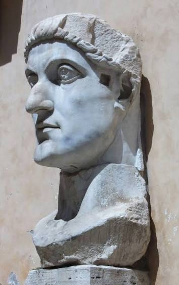
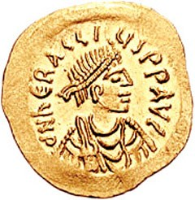
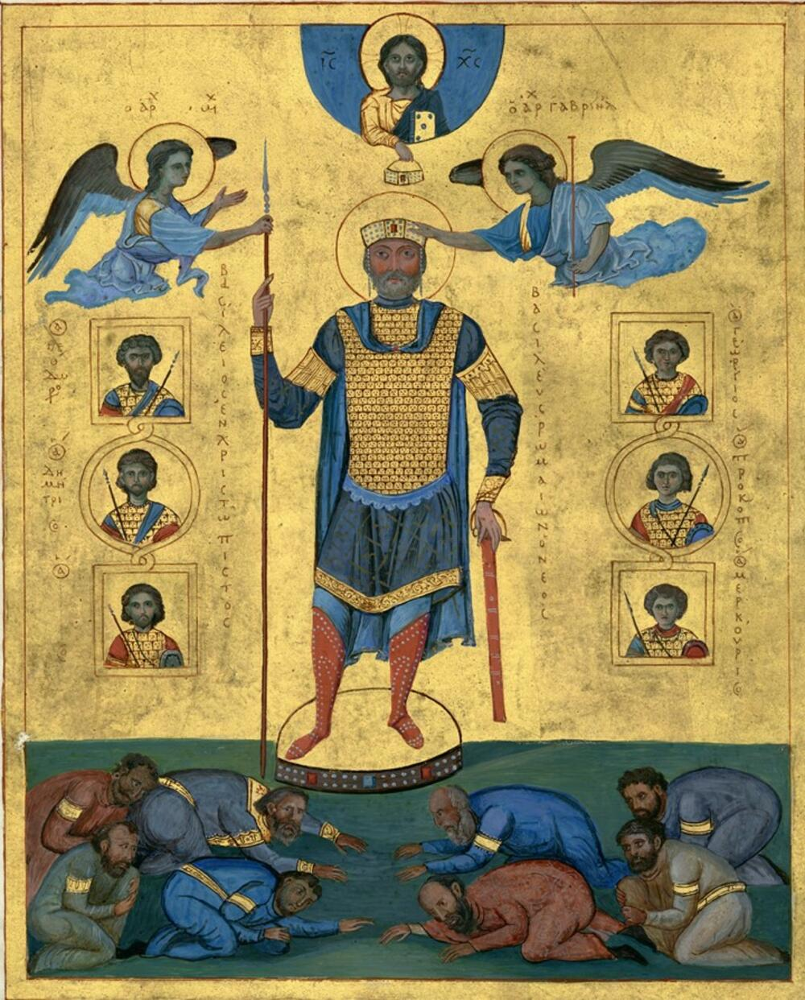
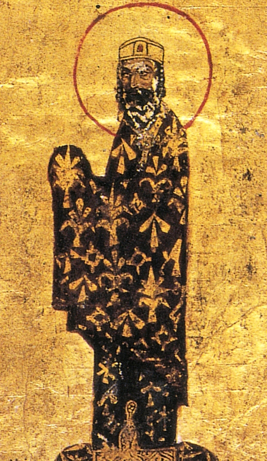
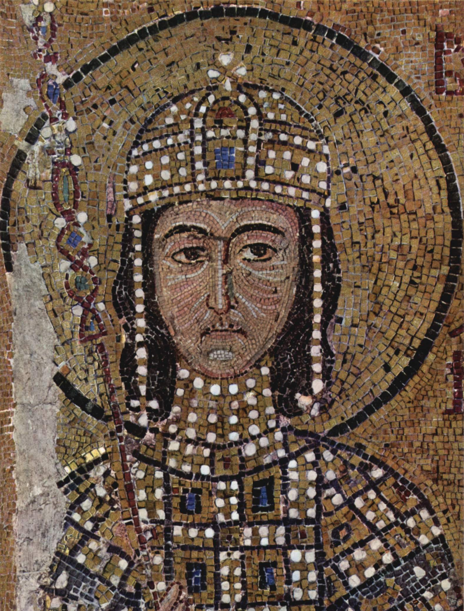

Ромејско царство је током више од хиљаду година имало велики број царева. Следећи владари оставили су највећи траг у политичкој, војној и културној историји царства.

Цар који је признао хришћанство, основао Нови Рим — Цариград, и променио ток историје царства.
Опширније
Владар великих освајања, творац Јустинијановог законика и градитељ Свете Софије.
Опширније
Цар који је спасао државу у време великих ратова и започео дубоке промене у структури царства.
Опширније
Један од најмоћнијих ромејских царева, познат по војним победама и ширењу царске власти.
Опширније
Обновио је царство после великих криза и поставио темеље Комнинске обнове.
Опширније
Последњи велики цар Комнинске династије, војсковођа и дипломата XII века.
ОпширнијеЦареви Ромејског царства оставили су дубок траг у историји Европе и Средоземља. Њихова владавина обликовала је право, уметност, архитектуру, војну организацију и хришћанску културу.
Од Константина Великог, који је основао Цариград, до Константина XI Палеолога, последњег браниоца града, историја ромејских царева представља више од хиљаду година развоја једне велике цивилизације.
Назад на почетну страницу